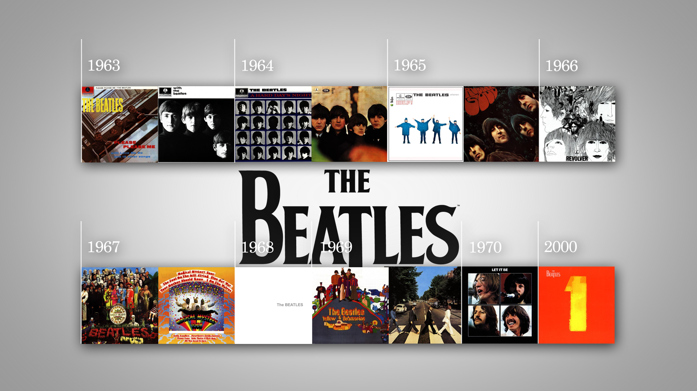
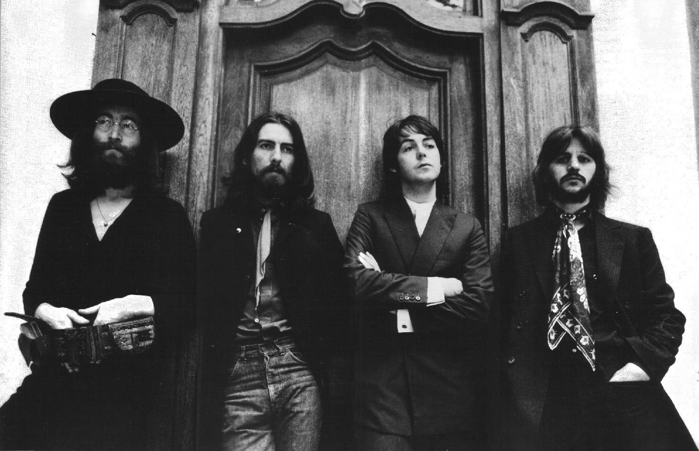

Comencemos con sus 4 integrantes de izquierda a derecha:
En esta página hablaremos un poco acerca de la historia de the beatles, el como 4 hombres de liverpool llegaron para cambiar las cosas.
Inovando en la musica e incluso creando nuevos generos, como el havy metal.
O como evolucionaron y adaptaron el rock and roll al rock como actualmente lo conocemos.
Al igual que mencionaremos superficialmente el motivo de su separación
Tocando los siguientes puntos:
Comencemos con sus 4 integrantes de izquierda a derecha:

The Beatles fue una banda de pop/rock británica formada en los 60 y considerada como la de mayor éxito comercial y
crítico de todos los tiempos. Tal es la repercusión de la llamada ‘Beatlemanía’ que sus letras, que representaron a los
ideales progresistas de la época, todavía perduran hoy en día.
Los orígenes del grupo se remontan al año 1956 en que John Lennon creó la formación The Quarry Men junto a su amigo Peter Shotton, que la abandonó al poco tiempo.
A la banda se unieron Paul McCartney, George Harrison y Stuart Sutcliffe, al tiempo que buscaban un nuevo nombre para el grupo. El elegido fue The Beatles,
juego de palabras entre el estilo musical que llevaban a cabo, el Beat, y el insecto Beetle (escarabajo), que eligieron por su admiración del grupo The Crickets (Los grillos).
Bajo este nuevo nombre se unió el batería Pete Best, y los cinco comenzaron a actuar por clubes de Liverpool y Hamburgo y a adquirir una incipiente popularidad. En 1961 Sutcliffe dejó la formación, al igual que Pete Best, que fue sustituido por Ringo Starr.

Formada la banda definitiva, el empresario Brian Epstein les propuso ser su representante tras escucharlos en una actuación y, de su mano y la del productor George Martin, lanzaron en 1962 su primer single, Love me do, con el que obtuvieron un gran éxito comercial.
'Please, please me' y With the Beatles fueron sus primeros trabajos discográficos, que se situaron en lo alto de las listas británicas y gracias a los que comenzaron a realizar numerosas giras.
Sería este el inicio de la Beatlemanía no solo en Inglaterra, sino también en Estados Unidos, país en el que realizaron una gira durante 1964 y en el que lograron un hecho histórico: que dos de sus álbumes y cinco singles liderasen las listas musicales en un mismo mes.
En ese mismo año la industria cinematográfica se interesó por el grupo. Así, la división de cine de la United Artists Records les propuso rodar ‘A hard day’s night’, una cinta que mostraba tres días en su vida
y que fue lanzada a la par que su disco homónimo. 1964 fue un año de intenso trabajo para el grupo que, además de estos trabajos, publicó el álbum ‘Beatles for Sale’.
La carrera musical de The Beatles logró tal fama y magnitud que, además de las giras internacionales, les permitió lanzar uno o más discos por año: 'Help!' (1965) acompañado por la película del mismo nombre y 'Rubber Soul' (1965) fueron los siguientes,
tras los que se produjo un cambio de etapa para el grupo a raíz de dos factores: los integrantes estaban exhaustos por la admiración que despertaban, por encima del grupo en conjunto,
y la frase pronunciada por Lennon ‘Somos más populares que Jesús’. Así, tras un último concierto en San Francisco decidieron dedicarse a las grabaciones en estudio.
Esta nueva etapa en la que experimentaron con nuevas influencias musicales como el country, blues o rock psicodélico- comenzó con el álbum 'Revolver' (1966), al que siguió 'Sgt. Pepper's Lonely Hearts Club Band' (1967),
considerado por la revista Rolling Stone como el mejor álbum de todos los tiempos y una auténtica obra maestra por parte de la crítica musical.
Incluso su elaborada portada fue caso de estudio: su psicodélico estilo se convirtió en un distintivo hippie y los uniformes militares coloridos una muestra de su contrariedad al sistema.
Ese mismo año la banda lanzó el single, ‘All you need is love’, una de sus canciones más populares que interpretaron en el programa Our World, el primero transmitido vía satélite para todo el mundo.
Esto sucedía meses antes del considerado como inicio de su fin a raíz de la muerte de Brian Epstein, su representante. Tras este suceso, publicaron en los años sucesivos
algunos de sus trabajos pendientes como 'Magical Mystery Tour' (1967), The Beatles (1968), 'Yellow Submarine' (1969) y 'Abbey Road' (1969),
al mismo tiempo que George Harrison y Lennon (en colaboración con su esposa, Yoko Ono) lanzaban trabajos en solitario.
A pesar de la difícil situación, en 1970 publicaron su último trabajo, ‘Let it be’, un conjunto de canciones en los que se apreciaba un trabajo cada vez más individual, a la que siguió una película documental con el mismo nombre.
Let it be fue el álbum menos valorado por la crítica y, dada la hostilidad entre los miembros del grupo, McCartney presentó una demanda para su disolución en diciembre de ese mismo año. Tras años de disputas, la disolución oficial se produjo en 1975.
|  |
| A pesar de la difícil situación, en 1970 publicaron su último trabajo, ‘Let it be’, un conjunto de canciones en los que se apreciaba un trabajo cada vez más individual, a la que siguió una película documental con el mismo nombre. Let it be fue el álbum menos valorado por la crítica y, dada la hostilidad entre los miembros del grupo, McCartney presentó una demanda para su disolución en diciembre de ese mismo año. Tras años de disputas, la disolución oficial se produjo en 1975. |
| La separación de The Beatles fue un duro golpe para los fans, que vieron imposible una reconciliación de la banda tras el asesinato de John Lennon en el año 1980. Ello supuso una reunión de los miembros restantes para el tributo que Harrison le rindió reescribiendo su canción ‘All Those Years Ago’, en la que McCartney aportó coros y Starr tocaba la batería. Por su parte, el tema ‘Here today’ del álbum ‘Tug of War’ (1982) fue el particular homenaje de McCartney a Lennon. |
 |